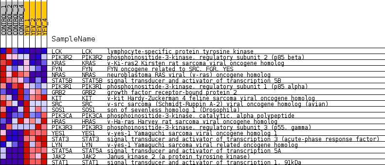
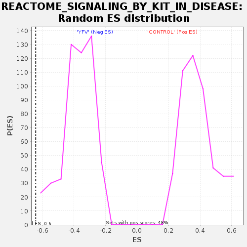

Profile of the Running ES Score & Positions of GeneSet Members on the Rank Ordered List
| Dataset | MATRIZ_GSE99081_collapsed_to_symbols.gsea_CLASE_99081.cls#CONTROL_versus_YFV |
| Phenotype | gsea_CLASE_99081.cls#CONTROL_versus_YFV |
| Upregulated in class | YFV |
| GeneSet | REACTOME_SIGNALING_BY_KIT_IN_DISEASE |
| Enrichment Score (ES) | -0.6439124 |
| Normalized Enrichment Score (NES) | -1.716805 |
| Nominal p-value | 0.0 |
| FDR q-value | 0.031060115 |
| FWER p-Value | 0.416 |
| SYMBOL | TITLE | RANK IN GENE LIST | RANK METRIC SCORE | RUNNING ES | CORE ENRICHMENT | |
|---|---|---|---|---|---|---|
| 1 | LCK | lymphocyte-specific protein tyrosine kinase | 1591 | 0.510 | -0.0631 | No |
| 2 | PIK3R2 | phosphoinositide-3-kinase, regulatory subunit 2 (p85 beta) | 1659 | 0.502 | -0.0327 | No |
| 3 | KRAS | v-Ki-ras2 Kirsten rat sarcoma viral oncogene homolog | 1980 | 0.487 | -0.0190 | No |
| 4 | FYN | FYN oncogene related to SRC, FGR, YES | 2773 | 0.371 | -0.0424 | No |
| 5 | NRAS | neuroblastoma RAS viral (v-ras) oncogene homolog | 2790 | 0.368 | -0.0181 | No |
| 6 | STAT5B | signal transducer and activator of transcription 5B | 3043 | 0.337 | -0.0105 | No |
| 7 | PIK3R1 | phosphoinositide-3-kinase, regulatory subunit 1 (p85 alpha) | 3142 | 0.327 | 0.0059 | No |
| 8 | GRB2 | growth factor receptor-bound protein 2 | 6017 | 0.074 | -0.1661 | No |
| 9 | KIT | v-kit Hardy-Zuckerman 4 feline sarcoma viral oncogene homolog | 10277 | -0.043 | -0.4258 | No |
| 10 | SRC | v-src sarcoma (Schmidt-Ruppin A-2) viral oncogene homolog (avian) | 11630 | -0.158 | -0.4983 | No |
| 11 | SOS1 | son of sevenless homolog 1 (Drosophila) | 12507 | -0.246 | -0.5354 | No |
| 12 | PIK3CA | phosphoinositide-3-kinase, catalytic, alpha polypeptide | 12744 | -0.270 | -0.5314 | No |
| 13 | HRAS | v-Ha-ras Harvey rat sarcoma viral oncogene homolog | 12934 | -0.292 | -0.5230 | No |
| 14 | PIK3R3 | phosphoinositide-3-kinase, regulatory subunit 3 (p55, gamma) | 13458 | -0.359 | -0.5307 | No |
| 15 | YES1 | v-yes-1 Yamaguchi sarcoma viral oncogene homolog 1 | 15296 | -0.740 | -0.5931 | Yes |
| 16 | STAT3 | signal transducer and activator of transcription 3 (acute-phase response factor) | 15310 | -0.748 | -0.5426 | Yes |
| 17 | LYN | v-yes-1 Yamaguchi sarcoma viral related oncogene homolog | 15921 | -1.332 | -0.4887 | Yes |
| 18 | STAT5A | signal transducer and activator of transcription 5A | 15943 | -1.404 | -0.3936 | Yes |
| 19 | JAK2 | Janus kinase 2 (a protein tyrosine kinase) | 16053 | -1.843 | -0.2738 | Yes |
| 20 | STAT1 | signal transducer and activator of transcription 1, 91kDa | 16215 | -4.153 | 0.0015 | Yes |

